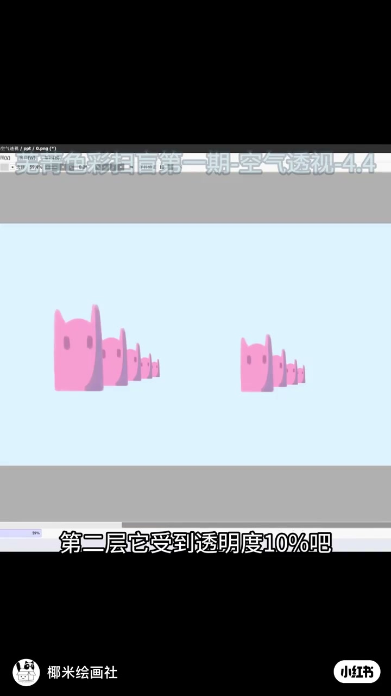
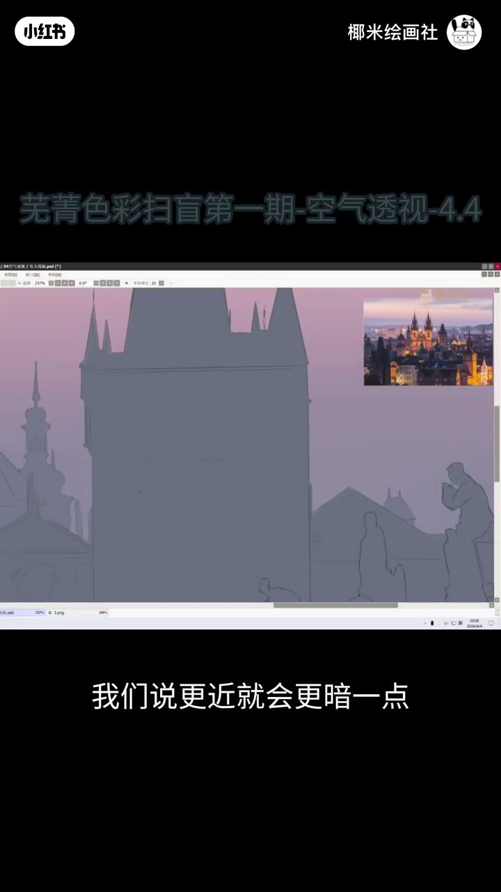
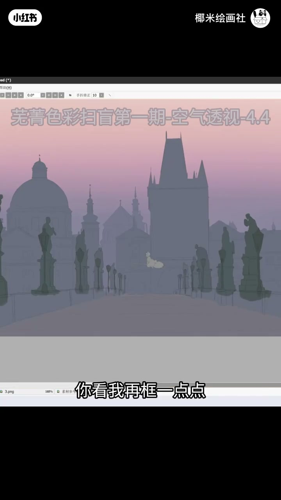
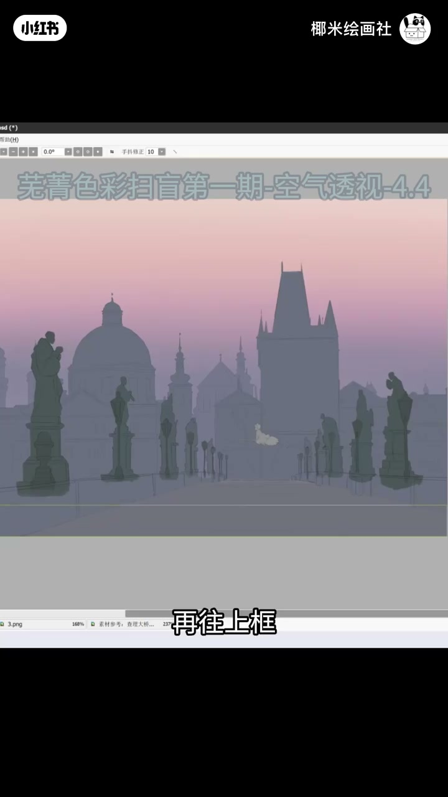
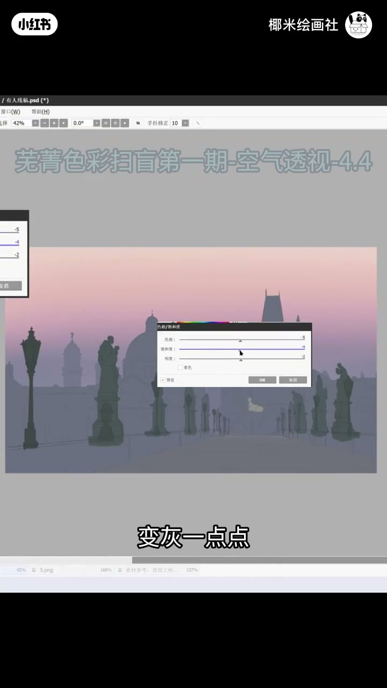

内容要点
「椰米绘画社」用数字绘画演示空气透视：近处更暗、对比更强；远处逐层降饱和、偏冷、变灰、略变暗，模拟大气散射。实操是框选远景图层「一次比一次少」地推冷推灰。口播前半稀疏，中后段以字幕与笔刷操作为准。
知识结构
[00:00→01:30]
立题演示
标题「空气透视」；近大远小之外，还有透明度/饱和度随距离衰减。
[01:30→02:30]
近暗远淡
字幕：更近就会更暗一点；远景吸入天空色。
[02:30→04:12]
图层配方
框选远层→偏冷、降饱和、变灰、略暗；层层递减做出纵深。
总结
空气透视不是只把远处画小：是对比、饱和与冷暖随距离衰减——图层上「越远越冷越灰」，空间才立得住。
00:00-02:30什么是空气透视：近清晰重，远淡入大气
课程条：「芜菁色彩扫盲第一期-空气透视」。开场用粉猫色块或建筑剪影演示：同样形状越远越小，同时颜色被天空「吃掉」——这就是空气透视，不只是透视缩短。
口播可核验处强调：更近就会更暗一点；远景对比降低、融入大气色。前两分钟 ASR 大量空白，概念段依据画面标题与示范图重建。

[00:05] 课程条与近大远淡色块演示
Lesson bar with near-large / far-pale color-block demo

[01:30] 建筑剪影：更近就会更暗一点
Building silhouettes: nearer reads a bit darker
02:30-04:12实操配方：框远景，冷一点灰一点
可核验口播集中在后段：框选远景（一次比一次少）→往冷调推、饱和度降一点→再变冷一点、变灰一点→上层滤镜继续自相饱和度/明度微调（变暗、变冷、变灰）。
层层递减后「我们就成功做出了」空气透视纵深。脚注：00:00–02:30 口播稀疏，远景配方以 02:30 后字幕为准。

[02:34] 框选远景图层准备推冷推灰
Marquee the distant layer ready to cool and desaturate

[02:40] 远景变冷一点、变灰一点
Push the background a bit cooler and a bit grayer

[02:46] 层层递减后做出空气透视纵深
Stepwise falloff builds aerial-perspective depth
完整转录（17段）
以下文本由 Whisper medium 模型自动转录，可能存在少量识别误差，已尽可能修正。
我们今天来讲一个空气透视
我们说空气透视!
并且往左边冷
保渡可以降一点点
接下来干嘛呢
你看我再框一点点
一次比一次少
然后干嘛呢
我变冷一点点
变灰一点点
再往上框点滤镜
调整
自相保渡度
变暗一点点
变冷一点点
变灰一点点
那我们就成功做出了